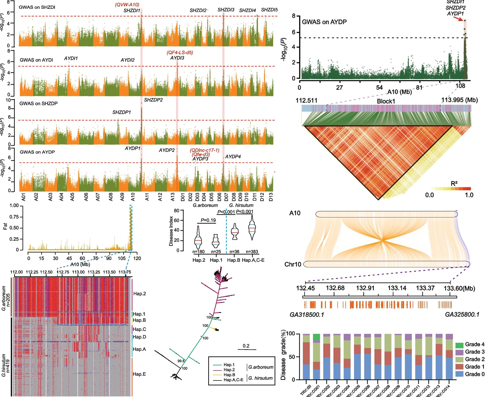

基因组学
1.转录组学
转录组测序是一种对机体组织、细胞转录本进行定量和定性分析的技术，主要用于基因表达分析，也可以用于新转录本、SNP、剪接变体鉴定，等位基因差异表达分析等。
2.重测序
利用Illumina测序平台对某一物种的个体或群体进行全基因组测序，并进行生物信息学分析，获得SNP/CNVs/InDel/SV等遗传变异信息。
3.基因组T2T组装
T2T基因组组装是以高准确性的PacBio HiFi测序和高连续性的ONT ultra-long测序为基础，组装得到的高准确性、高连续性、高完整性的端粒到端粒的高质量基因组，并对组装的端粒和着丝粒等序列进行初步验证。

4.比较基因组学
比较基因组学是一种通过比较不同物种的基因组来研究基因组结构、功能和进化关系的学科。它利用生物信息学分析，对不同物种的基因组进行比较和分析，以揭示基因组的组织结构、基因功能、基因调控网络、物种进化关系等方面的信息。 比较基因组学可以帮助我们了解基因组的进化历史、物种间的亲缘关系、基因的功能和表达调控等重要问题。它还可以为医学、农业、环境保护等领域的研究提供重要的基础数据和信息。 比较基因组学的研究方法包括基因组序列比对、基因组注释、基因功能预测、基因家族分析、物种进化关系分析等。这些方法可以帮助我们发现基因组中的保守区域、基因的同源性、基因家族的演化、物种的分歧时间等重要信息。 比较基因组学可以帮助我们深入了解基因组的结构和功能，以及物种的进化关系，为生命科学研究提供重要的基础数据和信息。
5.泛基因组学
泛基因组学（Pan-genomics）是一种新兴的基因组学研究方法，它旨在研究一个物种或群体中所有基因组的多样性和变异。与传统的基因组学研究方法不同，泛基因组学不仅关注单个基因组的序列和结构，还关注基因组之间的差异和多样性。 泛基因组学的研究对象可以是一个物种的多个个体，也可以是一个物种的不同亚种或种群。通过对这些基因组的比较和分析，可以揭示基因组的变异、基因的多态性、基因家族的演化、物种的进化历史等信息。
6.GWAS
GWAS可以通过对大量个体的基因组进行测序或基因分型，寻找与特定疾病或性状相关的单核苷酸多态性（SNP）或其他类型的遗传变异。 